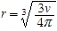

The volume enclosed by a sphere is given by the formula
Where r is the radius of the sphere. In the figure above, drag the orange dot to change the radius of the sphere
and note how the formula is used to calculate the volume. Since the 4, 3 and pi are constants, this simplifies to approximately
This formula was discovered over two thousand years ago by the Greek philosopher Archimedes. He also realized that the volume of a sphere is exactly two thirds the volume of its circumscribed cylinder, which is the smallest cylinder that can contain the sphere.
By rearranging the above formula you can find the radius:

where v is the volumeNote Most calculators don't have a cube root button. Instead, use the calculator's "raise to a power" button and raise the inner part to the power one third.
For a given surface area, the sphere is the one solid that has the greatest volume. This why it appears in nature so much, such as water drops, bubbles and planets.